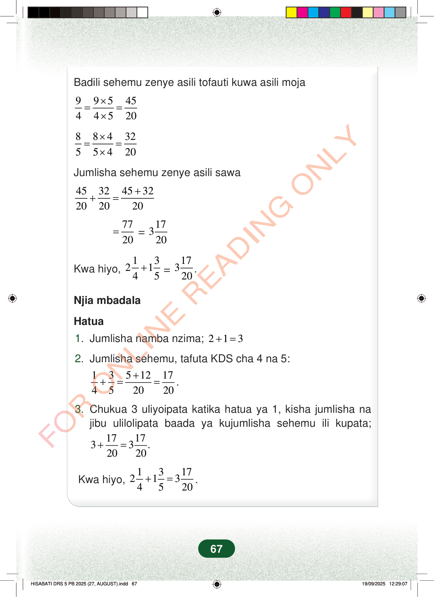

Badili sehemu zenye asili tofauti kuwa asili moja9954544520×==×8843255420×==×Jumlisha sehemu zenye asili sawa45324532202020++==7720=17320Kwa hiyo,132145+=17320.Njia mbadalaHatua1.Jumlisha namba nzima;213+=2.Jumlisha sehemu, tafuta KDS cha 4 na 5:1351217452020++==.3.Chukua 3 uliyoipata katika hatua ya 1, kisha jumlisha najibu ulilolipata baada ya kujumlisha sehemu ili kupata;171733.2020+=Kwa hiyo,13172134520+=.67
Badili sehemu zenye asili tofauti kuwa asili moja
9 9 5 45 4 4 5 20 × = = ×
8 8 4 32 5 5 4 20 × = = ×
Jumlisha sehemu zenye asili sawa
45 32 45 32 20 20 20 + + =
77 20 =
17 320
Kwa hiyo, 1 3 2 1 4 5 + = 17 320 .
Njia mbadala
Hatua
1. Jumlisha namba nzima; 2 1 3 + =
2. Jumlisha sehemu, tafuta KDS cha 4 na 5:
1 3 5 12 17 4 5 20 20 + + = = .
3. Chukua 3 uliyoipata katika hatua ya 1, kisha jumlisha na jibu ulilolipata baada ya kujumlisha sehemu ili kupata;
17 17 3 3 . 20 20 + =
Kwa hiyo, 1 3 17 2 1 3 4 5 20 + = .
67
Mfano wa kujumlisha 2 robo 1 na 1 tano 3 kwa kubadili sehemu kuwa na asili 20. Jibu linaonyeshwa kuwa 3 na sehemu 17 juu ya 20, pamoja na njia mbadala ya hatua tatu.94=9×54×5=452085=8×45×4=3220Jumlisha sehemu zenye asili sawa4520+3220=45+3220=7720=31720Kwa hiyo, 214+135=31720.Njia mbadalaHatua1.Jumlisha namba nzima;2.Jumlisha sehemu, tafuta KDS cha 4 na 5:3.Chukua 3 uliyoipata katika hatua ya 1, kisha jumlisha na jibu ulilolipata baada ya kujumlisha sehemu ili kupata;2 + 1 = 314+35=5+1220=1720.3+1720=31720.Kwa hiyo, 214+135=31720.